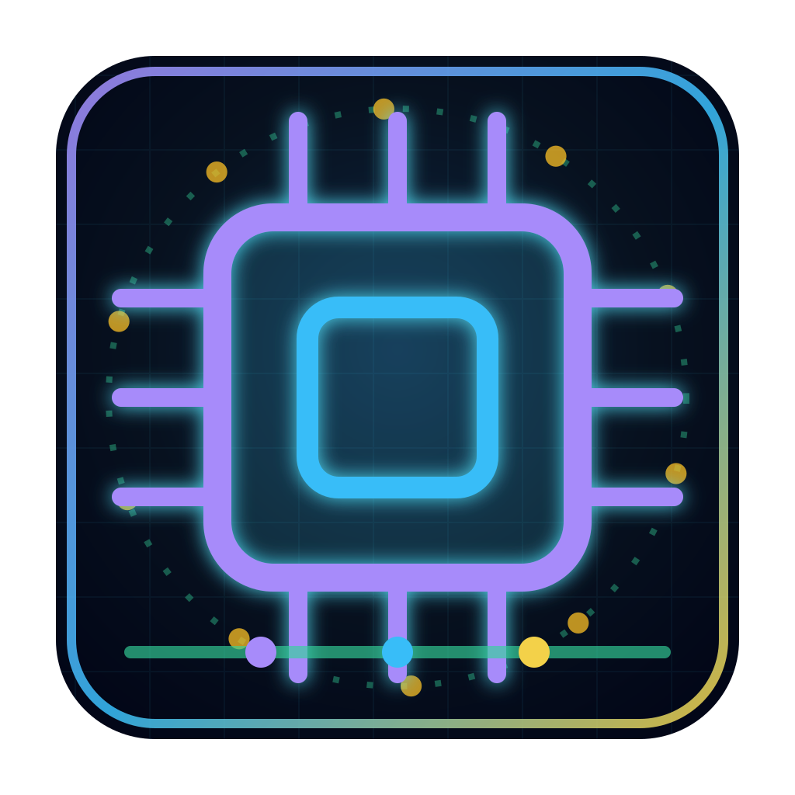
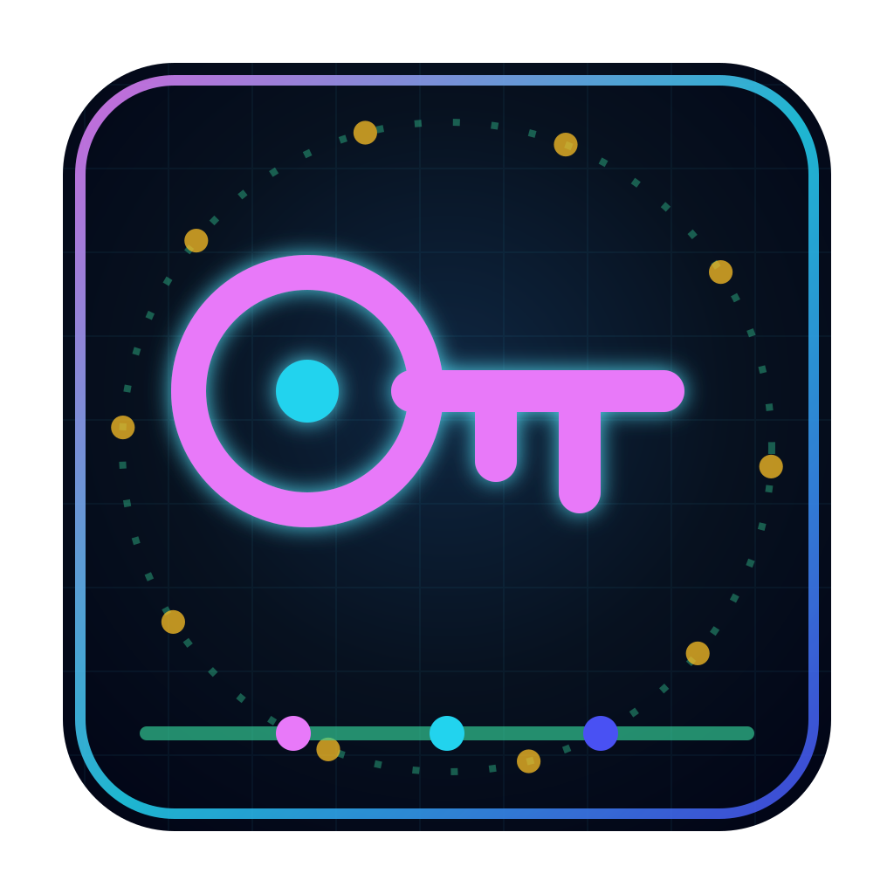
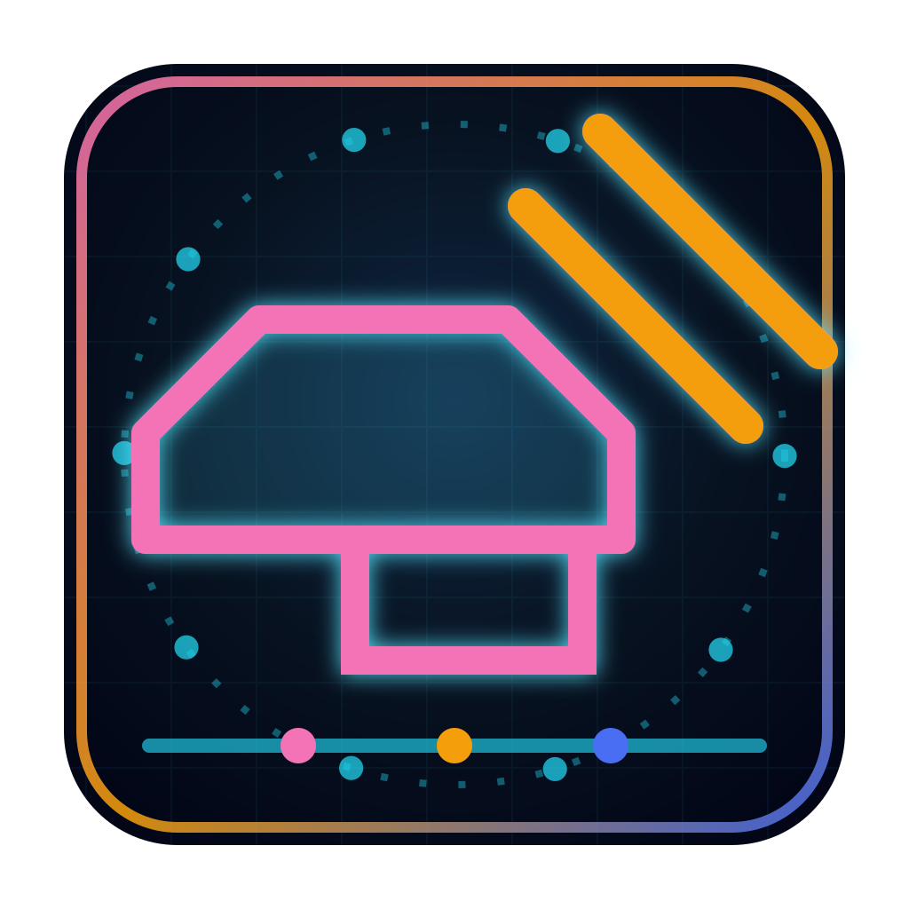
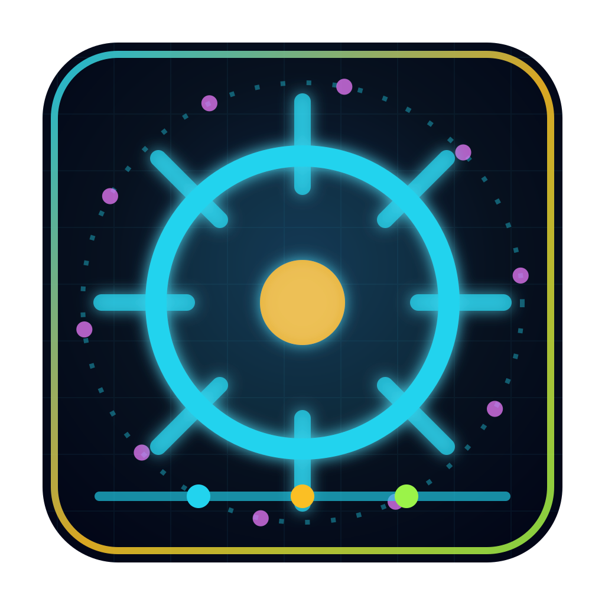
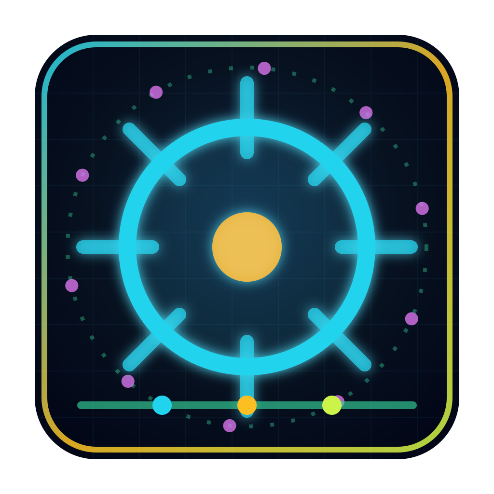

I've never felt this much behind as a programmer. The profession is being dramatically refactored as the bits contributed by the programmer are increasingly sparse and between. I have a sense that I could be 10X more powerful if I just properly string together what has become available over the last ~year and a failure to claim the boost feels decidedly like skill issue. There's a new programmable layer of abstraction to master (in addition to the usual layers below) involving agents, subagents, their prompts, contexts, memory, modes, permissions, tools, plugins, skills, hooks, MCP, LSP, slash commands, workflows, IDE integrations, and a need to build an all-encompassing mental model for strengths and pitfalls of fundamentally stochastic, fallible, unintelligible and changing entities suddenly intermingled with what used to be good old fashioned engineering. Clearly some powerful alien tool was handed around except it comes with no manual and everyone has to figure out how to hold it and operate it, while the resulting magnitude 9 earthquake is rocking the profession. Roll up your sleeves to not fall behind.
LOCAL-FIRST AI / ECOSYSTEM PROTOCOL
Hapa Node Atlas
Hapa is a local-first AI operating system for turning agents, cards, media, memory, and worldbuilding workflows into inspectable nodes. Each node has a role in the protocol: capture provenance, route context, coordinate handoffs, and make the new programmable layer visible.
PROBLEM / NEW PROGRAMMABLE LAYER
The Manual Is Missing
AI has made the individual developer stronger, but the work now lives inside a shifting layer of agents, prompts, memory, permissions, tools, plugins, workflows, and context. Hapa turns that layer into a visible operating system.
HAPA RESPONSE
Make The New Layer Inspectable
Hapa treats agents, tools, contexts, prompts, repos, skills, media, and workflows as named nodes with memory, provenance, routes, and operating state. The point is not to hide the complexity. The point is to make it navigable.
Map The Sprawl
Node Atlas and .hapaDash turn disconnected repos, local apps, protocols, and live services into a visible graph with links, status, and flow animation.
Keep The Context
Second Brain stores source material, turns, wiki pages, cards, topics, and agent context so the system can remember why work exists.
Prove The Capability
Character sheets and proof maps convert messy work history into skills, evidence, timelines, and operator-ready dossiers.
Operate The Workflow
Protocol flows, dashboards, and repo linkbacks give the new abstraction layer handles: where it starts, where it routes, what it touches, and what changed.
OVERWATCH / APPEND-ONLY BOARDS
Kanban Command Boards
The ecosystem-wide Overwatch board plus node-specific boards for each Hapa app, embedded from the local Kanban service when available and mirrored as a static snapshot for public viewing.
HAPA ECOSYSTEM / OVERALL QUEST
Loading Kanban board
STATIC SNAPSHOT / PUBLIC SAFE
Snapshot loadingPUBLIC SOURCE ROUTES
Direct GitHub Links
Verified public Hapa ecosystem repositories under calderwong, with embedded node surfaces first and the rest of the source map below.
hapa-character-sheet
Public character dossier app that turns Second Brain projection data into RPG-style skills, proof maps, loadout, timeline, profile, and passport views.
github.com/calderwong/hapa-character-sheethapa-second-brain
Local-first knowledge database and operator UI for media history, cards, wiki articles, and agent context.
github.com/calderwong/hapa-second-brain
hapa-dev-proto
Electron, React, TypeScript, and Vite sandbox for chat, cards, wormholes, forge, wiki, local AI, and P2P.
github.com/calderwong/hapa-dev-protohapa-avatar-node
Avatar and phamiliar lineage node for character variants, pose/media exports, source-image handling, and avatar evidence trails.
github.com/calderwong/hapa-avatar-nodehapa
Master Hapa ecosystem repo for Node Space, operating model docs, node maps, protocol standards, site surfaces, and cross-node coordination.
github.com/calderwong/hapahapa-awesome
First-entry ecosystem guide with node map, protocol overview, publication boundaries, and verified links into the public Hapa repos.
github.com/calderwong/hapa-awesomehapa-worldbuilding-wiki
Canon and wiki content repository for Hapa worldbuilding, protocol articles, cards, lore, and ecosystem documentation.
github.com/calderwong/hapa-worldbuilding-wikihapa-agent-registry-node
Coordination node for agent profiles, harness records, registration metadata, tool posture, and agent-context routing.
github.com/calderwong/hapa-agent-registry-nodehapa-chat-app
Hapa chat application surface for local-first AI conversations, operator workflows, and agent-facing interaction loops.
github.com/calderwong/hapa-chat-app
hapa-crypto-node
Trust node for cryptographic and provenance-oriented Hapa workflows, including identity, key, and verification-adjacent surfaces.
github.com/calderwong/hapa-crypto-node
hapa-cultivation-suite
Protocol and practice suite for turning Hapa skills, quests, recurring loops, and self-improvement flows into inspectable work.
github.com/calderwong/hapa-cultivation-suite
hapa-drama
Generation node for dramatic, narrative, and scene-oriented Hapa artifacts, useful for story beats and expressive media prompts.
github.com/calderwong/hapa-dramahapa-janus-world-node
World node for Janus/Hapa world state, canon surfaces, scene structure, and local worldbuilding records.
github.com/calderwong/hapa-janus-world-nodehapa-keys-node
Local key-management node for Hapa identity, secret handling, trust operations, and private operator workflows.
github.com/calderwong/hapa-keys-nodehapa-lance-node
Memory node for Lance-style data storage and retrieval workflows across Hapa sources, artifacts, and indexed context.
github.com/calderwong/hapa-lance-nodehapa-lito
Generation node for lightweight Hapa media and creative workflow experiments within the public node family.
github.com/calderwong/hapa-litohapa-living-comic
App surface for living comic panels, narrative frames, character/story presentation, and generated visual sequences.
github.com/calderwong/hapa-living-comichapa-llada-node
Local generation node for LLaDA-style model workflows, inference surfaces, and Hapa prompt or completion experiments.
github.com/calderwong/hapa-llada-nodehapa-lore-node
Memory node for lore, canon, narrative taxonomy, worldbuilding records, and reusable Hapa context surfaces.
github.com/calderwong/hapa-lore-nodehapa-luminastem-station
Music and stem station for Hapa audio generation, visual performance surfaces, and media-production workflows.
github.com/calderwong/hapa-luminastem-stationhapa-mlx-station
Apple Silicon MLX station for local model work, media generation support, and private compute experiments.
github.com/calderwong/hapa-mlx-stationhapa-open-tasks-node
Coordination node for open tasks, unresolved gaps, queueable work, and source-backed task state across Hapa projects.
github.com/calderwong/hapa-open-tasks-nodehapa-overwatch-kanban
Kanban board surface for Overwatch state, task lanes, acceptance criteria, and append-only operational updates.
github.com/calderwong/hapa-overwatch-kanbanhapa-quest-keeper
Quest and task tracker for Hapa work, turning open objectives into structured cards, status, and follow-through loops.
github.com/calderwong/hapa-quest-keeperhapa-song-registry
Registry node for songs, stems, music metadata, production references, and audio lineage in the Hapa media layer.
github.com/calderwong/hapa-song-registry
hapa-space
Spatial/game-facing Hapa surface for world interactions, node space experiments, and C# runtime prototypes.
github.com/calderwong/hapa-spacehapa-spaceship-desktop-hijack
Desktop app/manifold experiment for spaceship-style Hapa control surfaces, local context, and operator navigation.
github.com/calderwong/hapa-spaceship-desktop-hijackhapa-spec-scaffold
Protocol scaffold for Hapa node specs, standard surfaces, test fixtures, documentation, and implementation contracts.
github.com/calderwong/hapa-spec-scaffoldhapa-telemetry-node
Coordination node for telemetry, health checks, status UI, event records, and cross-node operational signals.
github.com/calderwong/hapa-telemetry-nodehapa-wiki-growth-agent
Memory node for wiki growth, article enrichment, canon expansion, Hapa card linkage, and curation-agent workflows.
github.com/calderwong/hapa-wiki-growth-agenthapa-wiki-viewer
Application surface for browsing Hapa wiki records, canon pages, cards, documentation, and local knowledge views.
github.com/calderwong/hapa-wiki-vieweroverwatch
Operational board and coordination system for tracking Hapa project state, lanes, status, priorities, and handoffs.
github.com/calderwong/overwatchhapa-proto0.00.00.7-visualizer
Early Hapa visualizer prototype for exploring how node-space, cards, and ecosystem concepts could be shown interactively.
github.com/calderwong/hapa-proto0.00.00.7-visualizerhapa-scratchpad
Scratchpad repository for Hapa experiments, rough notes, quick prototypes, and seed material that may graduate into nodes.
github.com/calderwong/hapa-scratchpad.HAPADASH / FLOW PLAYBACK
Flat 2D Node Swarm
Exported from the .hapaDash graph surface with monitored nodes, public pathways, and protocol flow scenarios.
FLOW PLAYBACK
Loading flow scenarios
HAPA NODE SPACE / 3D FLOW PLAYBACK
3D Node Space
The actual browser-safe Node Space renderer from the Hapa front-door repo, with animated scenario tubes, moving packets, formation controls, and flow cards.